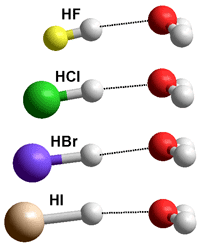

Qualitative comparison of gaseous
hydrated hydrogen halides

Hydrogen fluoride behaves differently from the other hydrohalic acids.
 Why is hydrofluoric acid a weak acid?
Why is hydrofluoric acid a weak acid?
'The energy of stabilization of covalent bonds by partial ionic character is accordingly so great for the bonds between hydrogen and the most electronegative atoms, fluorine and oxygen, as to overcome the anion-forming tendency of these atoms and to cause hydrogen fluoride and water to be much weaker acids than the hydrogen compounds of their heavier congeners.'
Linus Pauling, 1956, [3886b]
Melting and boiling points
The hydrohalic acids (HF, HCl, HBr, and HI) are the simplest of acids and are extremely soluble in water. The three heaviest (HCl, HBr, and HI) are strong acids, practically completely dissociating in aqueous solutions. The pKas in dilute aqueous solution are +3.17 [3887], -7, -9, and -9.5 for HF, HCl, HBr, and HI [3885], respectively [3888b]. b Recalculation of the pKas in infinitely dilute solution at 25 °C has given values of -7.3, -9.8, and -10.3 [3889]. Therefore, their free energy of dissociations (ΔG0=−RT ln Ka) are +18, −40, −54, and −57 kJ ˣ mol−1 respectively. The H-halide bond lengths in the gaseous monohydrates are calculated to be 0.92, 1.27, 1.41, and 1.61 Å respectively (see top right; the pyramidal (CS) ClH··OH2 dimer can be either up, or down as shown, with a planar (C2ν) transition state of 0.6 kJ ˣ mol−1 higher [4272]). Radioactive HAt (hydrogen astatide) bond length has been estimated at 1.72 Å.
Bond lengths and dipole moments
When anhydrous, they form low-boiling liquids (see above right). The molar polarizabilities are 2.0, 7.1, 9.1, and 13.5 for HF, HCl, HBr, and HI, respectively [3888c].
In aqueous solution, HCl, HBr, and HI dissociate:
HCl + H2O (aq)  H3O+ (aq) + Cl− (aq)
H3O+ (aq) + Cl− (aq)
HBr+ H2O (aq)  H3O+ (aq) + Br− (aq)
H3O+ (aq) + Br− (aq)
HI + H2O (aq)  H3O+ (aq) + I− (aq)
H3O+ (aq) + I− (aq)
The halide ions form very weak hydrogen bonds to water molecules and prefer to sit in partially puckered clathrate cages (see elsewhere for a description). A minimum of three water molecules is needed in order stabilize the HCl dissociated species relative to the undissociated cluster, while four water molecules are necessary to achieve significant relative stabilization of the dissociated species [4389].
Using NMR, the 7Li, 23Na, 87Rb, and 133Cs resonances have been observed for diffusion constants in aqueous solution and the solvent H2O. Their diffusivities, dynamic ionic radius and radial hydration numbers, (rs − Rion)/RH2O, were estiomated at 0.829 MPa ˣ s, 0.846 MPa ˣ s, 0.864 MPa ˣ s, 0.864 MPa ˣ s, 337 pm, 244 pm, 190 pm, 170 pm, and 1.9, 1.0 0.28, 0, respectively [4296].
HF chain
Anhydrous HF can be prepared from sulfuric acid-treated fluorite (CaF2, fluorospar) in the laboratory by distillation from thoroughly dried potassium hydrogen fluoride (KHF2). It is a hygroscopic, highly reactive (attacking glass), colorless, toxic liquid (boiling point 19.5 °C; melting point -83.37 °C; density at boiling point 970 kg ˣ m−3; critical temperature 188 °C, critical pressure 6.5 MPa; dielectric constant 83.6, 0 °C). c It forms zigzagged hydrogen-bonded molecular chains in all phases (solid > liquid > gas), but rings are possible.d It is an excellent solvent and miscible with water in all proportions forming toxic, corrosive, and penetrating hydrofluoric acid. Liquid HF self-ionizes to a small extent (electrical conductivity 1.0 ˣ μS ˣ cm−1 at 0 °C) [4003],
H2F3−
HF + F−  FHF− K = 5.0 kg ˣ mol−1
FHF− K = 5.0 kg ˣ mol−1
HF + FHF− FHFHF− K = 0.58 kg ˣ mol−1
FHFHF− K = 0.58 kg ˣ mol−1
and this conductivity increases substantially on the addition of a small amount of water,
HF  H3O+ + F− Ka = 6.84 10−4 ˣ mol ˣ kg −1
H3O+ + F− Ka = 6.84 10−4 ˣ mol ˣ kg −1
One molal HF aqueous solution (1 m, 25 °C)) contains 0.8428 m HF, 0.0111 m F−, 0.0403 m FHF−, 0.0218 m FHFHF−, and 0.0732 m H3O+ [4003].
Variation of the Hammett constant with HF concentration
[3890]
![Variation of the Hammett constant with HF concentration, [3890]](images/pkahf.gif "Variation of the Hammett constant with HF concentration, [3890]")
Aqueous HF has a maximum density at about 70 % by volume (1270 kg ˣ m−3, 0 °C).c In contrast to HCl, HBr, and HI, HF behaves like a weak acid in dilute solution. The question often asked is, 'why?' [3886]. any reasons have been put forward for this, but mostly these are different views of the same phenomenon.
Fluorine is the most electronegative of all the elements (F = 3.98 cf., O = 3.44; Cl = 3.16; Br = 2.96; I = 2.66; ) and the bond between it and hydrogen is very polar. The hydrogen atom carries much positive charge (~+0.5) balanced by the fluorine that is fairly negatively charged (~-0.5). HF has the highest heat of formation of the hydrogen halides.
The acidity of aqueous HF increases with concentration, as shown right where the Hammett acidity constant (H0)a is used rather than the pKa [3890]. The graph may be less than quantitative due to possible contaminants. H2SO4 shows similar behavior. The rationale for the increase in acidity is that as the water content decreases, the hydration of the H3O+ decreases (lower water activity). The positive charge is less spread out, increasing its acidity. At higher HF concentrations (very little water) the solution is effectively HF, and the following reactions occur,
 using the 6-31G** basis set")
2HF  [H2F2]
[H2F2]  H2F+ + F−
H2F+ + F−
2 [H2F2]  H3F2+ + HF2−
H3F2+ + HF2−
where H2F+, H3F2+ etc., are more acidic than H3O+. Although anhydrous HF does not conduct an electric current, concentrated HF has a high ionic conductivity due to processes similar to the Grotthuss mechanism:
F−···H-F···H-F ···H-F  F-H···F-H···F-H···F−
F-H···F-H···F-H···F−
H+···F-H···F-H ···F-H  H-F···H-F ···H-F···H+
H-F···H-F ···H-F···H+
It appears that HF ionizes fairly completely in solution in water. However, instead of producing free hydroxonium ions, H3O+, and fluoride ions F−, there is such a strong attraction between these that they form a strongly bound hydrogen-bonded ion pair, [H3O+.F−]. As the H3O+ ion is not free, it does not act as an acid. Other reactions that occur are:
[H3O+.F−] + HF  H3O+ + HF2−
H3O+ + HF2−
2H20 + F−  [H3O+.F−] + OH− with metal fluorides
[H3O+.F−] + OH− with metal fluorides
Using thermodynamics, another way of looking at the pKa of dilute aqueous HF is that there is a very large negative entropy of hydration (with more significant order) of F− with TΔS0 =−31, −17, −10, and −2 kJ ˣ mol−1 (at 25 °C) for HF, HC1, HBr, and HI, respectively [3888a]. This entropy change indicates a strong binding of water molecules to the fluoride ion, its kosmotropic activity, whereas the bigger chaotropic halide anions Cl−, Br−, and I− yield positive hydration entropy. Also, the fact that the weak acid HF dissociates more at a lower temperature reflects this significant negative entropic contribution,
Structure of hydrated HF molecule calculated
using the Restricted Hartree-Fock wave function (RHF)
using the6-31G** basis set, see also [3892]
The structure of the close ion-pair [H3O+.F−] has not been found using ab initio calculations (see right). Using density functional theory and Møller–Plesset second-order perturbation methods [3895], the undissociated hydrogen fluoride appears more stable than the dissociated case, at least up to hexa-hydration. Using the Restricted Hartree-Fock wave function (RHF) with the 6-31G** basis set, the F-H, H···O and F···O distances are 0.968 Å, 1.43 Å, and 2.4 Å, respectively, with the charges on the F, H and O atoms being -0.486, +0.499 and -0.816 respectively (see left). The three next nearest O-atoms (water molecule) to the F-atom are 2.9 Å away, and the next two O-atoms (water molecule) 4.2 Å away. This has separately been shown that mostly one water molecule is bound to the H atom of hydrogen fluoride,in contrast, frequent exchanges occur at the F-atom (with weaker H-bonds), and that a coordination number of (5 + 1) is the most preferred one for the first hydration shell [3891]. Under deuterated conditions using ab initio molecular dynamics at low concentration, DF was found to form a strongly bound complex, dynamically fluctuating between F-D···D2O and F−···D3O+ structures [3893].
[Back to Top  ]
]
a The Hammett acidity function H0 is used to determine the acidity of any solution by the fraction of a series of neutral indicators which are converted from an uncharged molecule to a protonated species.
H0 is used where = pKa+ log (neutral indicator/positively charged indicator)
H0 is used, which approaches pH in dilute aqueous solution but deviates at high concentrations. The following indicator series has been used; 2,3-dinitroaniline, pKa - 2.46; 2,3-dinitroaniline pKa - 3.67; 4-methyl-2,6-dinitroaniline, pKa- 4.44; 6-bromo-2,4-dinitroaniline, pKa- 6.71; anthraquinone, pKa- 8.27; 2,4,6-trinitroaniline, pKa- 9.41. Different indicators give slightly different curves, and their pKas may shift. [Back]
b These pKas for HCl, HBr, and HI are very negative due to the very low activity of the water in these solutions. [Back]
c J. Aigueperse, P. Mollard, D. Devillliers, M. Chemla, R. Faron, R. Roano and J. P. Cuer, Fluorine Compounds, Inorganic, Ullmann's Encyclopedia of Industrial Chemistry, Wiley-VCH Verlag GmbH & Co. KGaA, Weinheim, Vol. 15, (2012) pp 397-441 DOI: 10.1002/14356007.a11_307. [Back]
d E. A. Orabi and J. D. Faraldo-Gomez, A new molecular-mechanics model for simulations of hydrogen fluoride in chemistry and biology, Journal of Chemical Theory and Computation, 16 (2020) 5105-5126. [Back]
Home | Site Index | Solubility of nonpolar gases | Hydrophobic hydration | Protein hydration | Nucleic acid hydration | Aqueous biphasic systems | Gas-liquid interface and nanobubbles | LSBU | Top
This page was established in 2020 and last updated by Martin Chaplin on 20 December, 2021